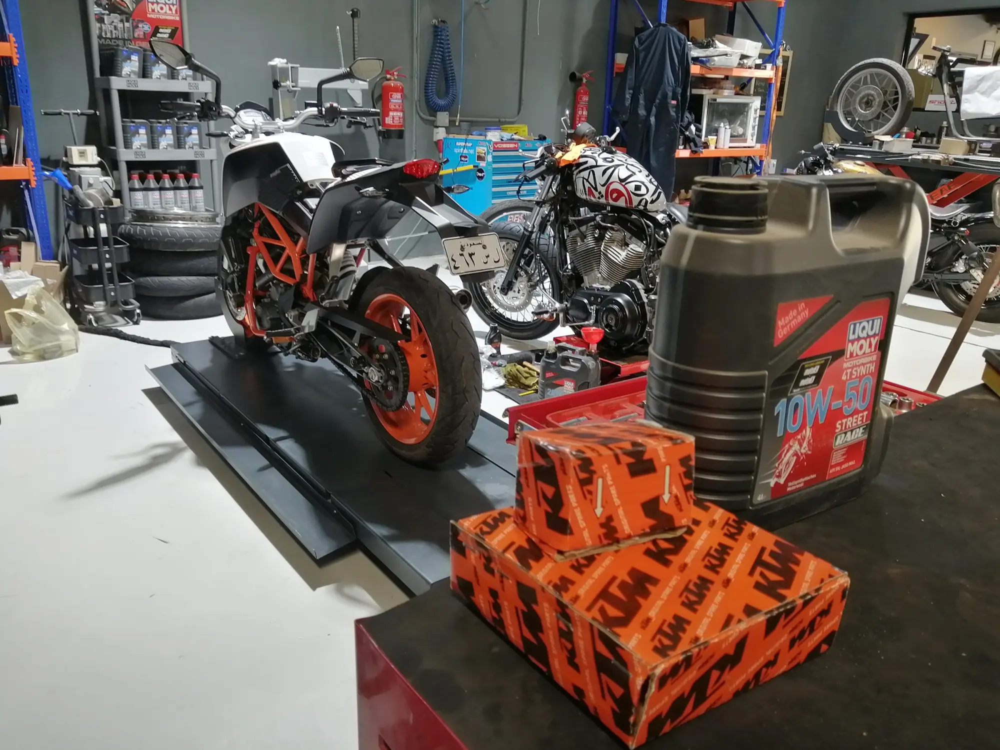

نشاركك الفخر بسيارتك.
بدأت SHAFT من أشخاص لم يجدوا ورشة يثقون بها لسياراتهم BMW. هذه قصتنا.
قصتنا
- 1999
كراج المنزل
عانينا مثل الجميع في صيانة وإصلاح سياراتنا: لم تكن هناك ورش BMW جيدة، وكانت صيانة الوكالة تكلفنا الكثير في كل مرة. فبدأنا العمل على سياراتنا BMW وميني في كراج المنزل.
- ثم
الأصدقاء، ثم أصدقاؤهم
وثق بنا الأصدقاء وغيرهم لنظافة عملنا وسرعتنا في الوصول إلى السبب الحقيقي لأي عطل دون تغيير قطع لا داعي لتغييرها. وهكذا بنينا سمعتنا.
- 2006
التعديل والسباقات
جاء تعديل السيارات والدراجات النارية معاً، وحققنا مسيرة من الفوز، من سباقات الأوتوكروس الوطنية إلى معارض السيارات.
- الآن
مركز الخدمة
بعد أكثر من 19 عاماً من الخبرة والتعديل الخاص والهندسة المعتمدة، افتتحنا مركز خدمة لهندسة السيارات في الدمام، لخدمة وتعديل السيارات والدراجات النارية بمستوى عالٍ.
معايير أصلية، أدوات أصلية.

تعمل SHAFT بمعايير الصيانة الأصلية (OEM) وبأدوات معتمدة من الشركات المصنعة، على يد ميكانيكيين ومهندسين شغوفين بعملهم. النزاهة والجودة قيمنا: خدمة احترافية عالية المستوى بتكلفة معقولة.
قيمنا
محترفون. ملتزمون. موثوقون.
مهمتنا بسيطة: تجربة رائعة بشكل غير مألوف لكل من يحتاج إلى خدمة وإصلاح سيارته.
الورشة
المنطقة الصناعية الأولى، الدمام. السيارات في جهة، والدراجات النارية في الجهة الأخرى.



تفضل بزيارتنا.
احجز موعد صيانة أو فحص، أو تعال وشاهد الورشة.